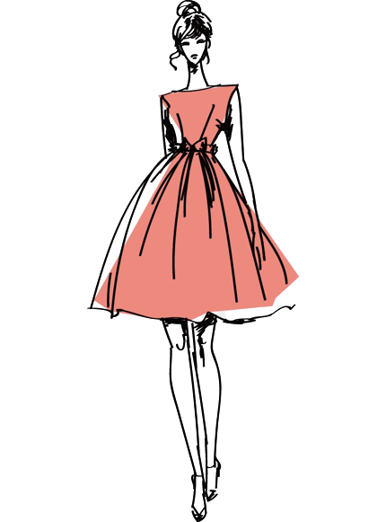
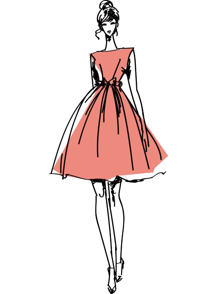

Hi! I am Charmaine
A professional model


There comes a day when you realize turning the page is the best feeling in the world, because you realize there's so much more to the book than the page you were stuck on.

I like drums. Drums are a source of pure power and have long been used in rituals, music, and the arts by civilizations all over the world. I feel as though I am dealing with the soul of music when I play the drums. That music will always have a special place in my heart.

Writing poetry provides me a place to put all of my problems, fears, and ideas down on paper and off of my shoulders. Being able to get whatever is on my mind onto paper helps me stop thinking about whatever is going on. This allows me to temporarily disengage from the "real world," even if just for a few seconds.

I like sky photography. I capture the unique and stunning combinations of the colors of the sky, the clouds, and the ground. Looking at the photos that I took helps me relax and appreciate the sky more.
If you want to see some samples of my photography and poetry, CLICK HERE